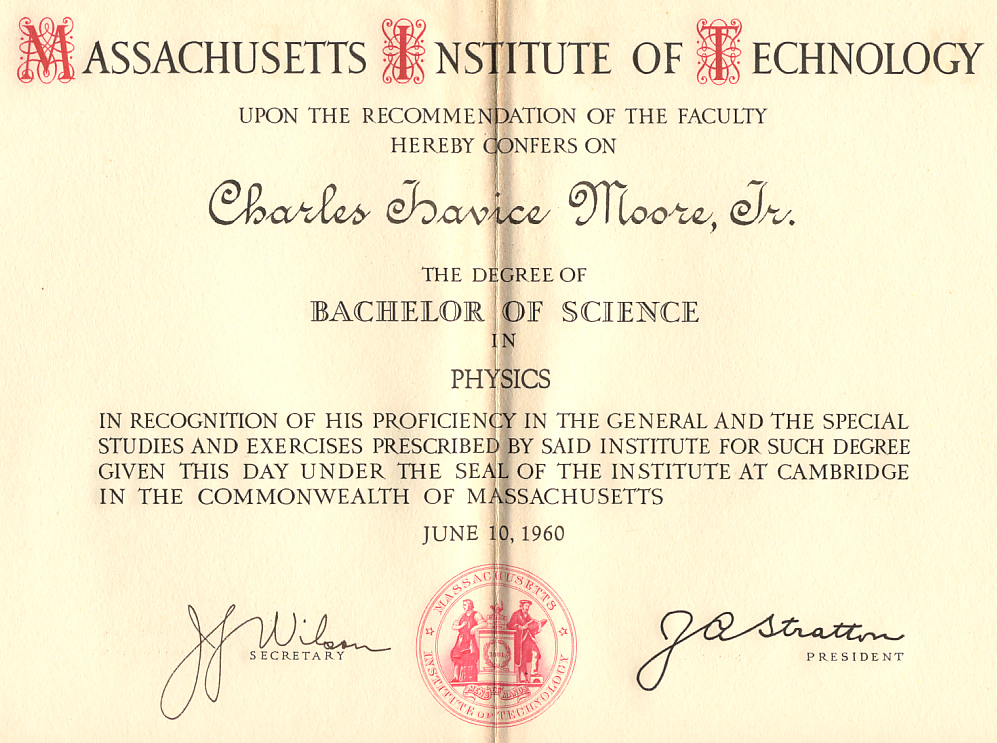
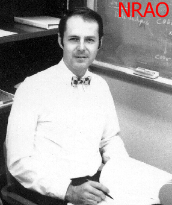
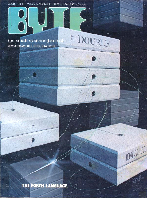
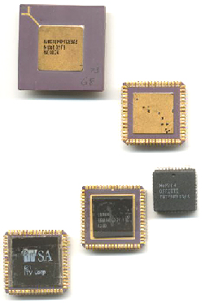
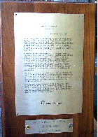
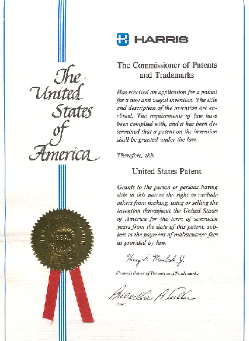
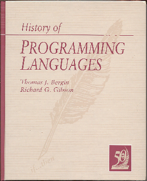

Updated 2002 September
colorForth Home Page
Charles H Moore
Education

Born in McKeesport Pennsylvania, near Pittsburg, in 1938. He grew up in
Flint Michigan and was Validictorian of Central High School (1956).
Granted a National Merit scholarship to MIT where he joined Kappa Sigma
fraternity. Awarded a BS in Physics (1960) with a thesis on data
reduction for the Explorer XI Gamma Ray Satellite. Then went to
Stanford where he studied mathematics for 2 years (1961).
Programmer
He learned Lisp from John McCarthy. And Fortran II for the IBM 704
to predict Moonwatch satellite observations at Smithsonian
Astrophysical Observatory (1958). Compressed this program into
assembler to determine satellite orbits (1959). On the other coast, he
learned Algol for the Burroughs B5500 to optimize electron-beam
steering at Stanford Linear Accelerator Center (1962). As Charles H
Moore and Associates, he wrote a Fortran-Algol translator to support a
timesharing service (1964). And programmed a real-time gas
chromatograph on his first minicomputer (1965). Learned Cobol to
program order-entry network at Mohasco (1968). More details are
available in an unpublished paper.

Forth
Chuck invented Forth (1968) and collected his personal software
library onto an IBM 1130 which was connected to the first graphics
terminal he'd seen (IBM 2250). Soon he used Forth to control the 30ft
telescope at Kitt Peak for the National Radio Astronomy Observatory
(1970).
And then helped found Forth, Inc
(1973) with $5,000 from an angel investor. For the next 10 years, he
ported Forth to numerous mini, micro and main-frame computers. And
programmed numerous applications from data-base to robotics.

In 1980, Byte magazine published a special issue on The Forth Language. Gregg Williams editorial (2.5MB) provides a rare view of Forth from the outside.
Chips
Finally,
he determined to build a Forth chip to realize the architecture
intrinsic to Forth. He was a founder of Novix, Inc and implemented the
NC4000 (1983) as a gate array (top at right). He developed and sold
kits to promote the chip. A derivative was eventually sold to Harris
Semiconductor who marketed it as the RTX2000 for space applications
(1988).
As Computer Cowboys, he designed the standard-cell Sh-Boom chip
(1985), a derivative still being marketed. Then he developed his own
design tools for the MuP21 (1990), which has multiple specialized
processors. And the F21 (1993) featuring a network interface. He was a founder of the iTv Corp, and designed the i21, a similar architecture with enhanced performance (1996) aimed at internet applications.
Back as Computer Cowboys, Chuck invented colorForth, ported his
VLSI design tools to it and designed the c18 microcomputer (2001), a
simple core that can be replicated many times on a chip. Each of his
chips has emphasised high performance and low power.

Awards
- Commendation for contributions to software quality, Computer Design, 1983.
Plaque signed by President Reagan.

- Life member of FIG
- Honorary Chairman of China FIG, 1987
- Footsteps in an Empty Valley, Offete Enterprises, 1988
Patents

- US 05070451 Forth Specific Language Microprocessor, 1991
- US 05319757 Forth Specific Language Microprocessor, 1995
- US 05440749 High performance, low cost microprocessor architecture, 1995
- US 05530890 High performance, low cost microprocessor, 1996
- US 05604915 Data processing system having load dependent bus timing, 1997
- US 05659703 Microprocessor system with hierarchical stack and method of operation, 1997
- US 05784584 High performance microprocessor using instructions that operate within instruction groups, 1998
- US 05809336 High performance microprocessor having variable speed system clock, 1998
- EP 0870226 Risc microprocessor architecture, 1997
- WO 9715001 Risc microprocessor architecture, 1997
Recent publications
- Renaissance Development, Embedded Systems Conference, 1992

- The Evolution of Forth; Rather, Coburn, Moore; History of Programming Languages II, Addison-Wesley, 1996
- Some chip documentation is on-line at UltraTechnology.
- This web site, 2001